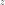
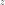
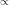

Note
Click here to download the full example code
Bayesian calibration of a computer code¶
In this example we are going to compute the parameters of a computer model thanks to Bayesian estimation.
Let us denote the observation sample, the model prediction,  the density function of observation
the density function of observation  conditional on model prediction , and the calibration parameters we wish to estimate.
conditional on model prediction , and the calibration parameters we wish to estimate.
The posterior distribution is given by Bayes theorem:
where  means “proportional to”, regarded as a function of .
The posterior distribution is approximated here by the empirical distribution of the sample generated by the Metropolis-Hastings algorithm. This means that any quantity characteristic of the posterior distribution (mean, variance, quantile, …) is approximated by its empirical counterpart.
Our model (i.e. the compute code to calibrate) is a standard normal linear regression, where
where .
The “true” value of  is:
is:
We use a normal prior on :
where
is the mean of the prior and
is the prior covariance matrix with
The following objects need to be defined in order to perform Bayesian calibration:
The conditional density must be defined as a probability distribution
The computer model must be implemented thanks to the ParametricFunction class. This takes a value of as input, and outputs the vector of model predictions , as defined above (the vector of covariates is treated as a known constant). When doing that, we have to keep in mind that will be used as the vector of parameters corresponding to the distribution specified for
. For instance, if is normal,
this means that must be a vector containing the mean and variance of The prior density encoding the set of possible values for the calibration parameters, each value being weighted by its a priori probability, reflecting the beliefs about the possible values of before consideration of the experimental data. Again, this is implemented as a probability distribution
The Metropolis-Hastings algorithm that samples from the posterior distribution of the calibration parameters requires a vector initial values for the calibration parameters, as well as the proposal laws used to update each parameter sequentially.
import pylab as pl
from openturns.viewer import View
import openturns as ot
import openturns.viewer as viewer
from matplotlib import pylab as plt
ot.Log.Show(ot.Log.NONE)
Dimension of the vector of parameters to calibrate
paramDim = 3
# The number of obesrvations
obsSize = 10
Define the observed inputs

xmin = -2.
xmax = 3.
step = (xmax-xmin)/(obsSize-1)
rg = ot.RegularGrid(xmin, step, obsSize)
x_obs = rg.getVertices()
x_obs
Define the parametric model that associates each observation
and values of the parameters to the parameters of the distribution of the corresponding observation: here where  , the first output of the model, is the mean and
, the first output of the model, is the mean and  , the second output of the model, is the standard deviation.
, the second output of the model, is the standard deviation.
fullModel = ot.SymbolicFunction(
['x1', 'theta1', 'theta2', 'theta3'], ['theta1+theta2*x1+theta3*x1^2', '1.0'])
model = ot.ParametricFunction(fullModel, [0], x_obs[0])
model
Define the observation noise and create a sample from it.
ot.RandomGenerator.SetSeed(0)
noiseStandardDeviation = 1.
noise = ot.Normal(0, noiseStandardDeviation)
noiseSample = noise.getSample(obsSize)
noiseSample
Define the vector of observations

In this model, we use a constant value of the parameter. The “true” value of is used to compute the model outputs.
thetaTrue = [-4.5, 4.8, 2.2]
y_obs = ot.Sample(obsSize, 1)
for i in range(obsSize):
model.setParameter(x_obs[i])
y_obs[i, 0] = model(thetaTrue)[0] + noiseSample[i, 0]
y_obs
Draw the model vs the observations.
functionnalModel = ot.ParametricFunction(fullModel, [1, 2, 3], thetaTrue)
graphModel = functionnalModel.getMarginal(0).draw(xmin, xmax)
observations = ot.Cloud(x_obs, y_obs)
observations = ot.Cloud(x_obs, y_obs)
observations.setColor("red")
graphModel.add(observations)
graphModel.setLegends(["Model", "Observations"])
graphModel.setLegendPosition("topleft")
view = viewer.View(graphModel)
Define the distribution of observations conditional on model predictions
Note that its parameter dimension is the one of  , so the model must be adjusted accordingly
, so the model must be adjusted accordingly
conditional = ot.Normal()
conditional
Define the mean , the covariance matrix , then the prior distribution of the parameter .
thetaPriorMean = [-3., 4., 1.]
sigma0 = [2., 1., 1.5] # standard deviations
thetaPriorCovarianceMatrix = ot.CovarianceMatrix(paramDim)
for i in range(paramDim):
thetaPriorCovarianceMatrix[i, i] = sigma0[i]**2
prior = ot.Normal(thetaPriorMean, thetaPriorCovarianceMatrix)
prior.setDescription(['theta1', 'theta2', 'theta3'])
prior
Proposal distribution: uniform.
proposal = [ot.Uniform(-1., 1.)] * paramDim
proposal
Out:
[class=Uniform name=Uniform dimension=1 a=-1 b=1, class=Uniform name=Uniform dimension=1 a=-1 b=1, class=Uniform name=Uniform dimension=1 a=-1 b=1]
Test the MCMC sampler¶
The MCMC sampler essentially computes the log-likelihood of the parameters.
mymcmc = ot.MCMC(prior, conditional, model, x_obs, y_obs, thetaPriorMean)
mymcmc.computeLogLikelihood(thetaPriorMean)
Out:
-151.2962855240547
Test the Metropolis-Hastings sampler¶
Creation of the Random Walk Metropolis-Hastings (RWMH) sampler.
initialState = thetaPriorMean
RWMHsampler = ot.RandomWalkMetropolisHastings(
prior, conditional, model, x_obs, y_obs, initialState, proposal)
In order to check our model before simulating it, we compute the log-likelihood.
RWMHsampler.computeLogLikelihood(initialState)
Out:
-151.2962855240547
We observe that, as expected, the previous value is equal to the output of the same method in the MCMC object.
Tuning of the RWMH algorithm.
Strategy of calibration for the random walk (trivial example: default).
strategy = ot.CalibrationStrategyCollection(paramDim)
RWMHsampler.setCalibrationStrategyPerComponent(strategy)
Other parameters.
RWMHsampler.setVerbose(True)
RWMHsampler.setThinning(1)
RWMHsampler.setBurnIn(2000)
Generate a sample from the posterior distribution of the parameters theta.
sampleSize = 10000
sample = RWMHsampler.getSample(sampleSize)
Look at the acceptance rate (basic checking of the efficiency of the tuning; value close to 0.2 usually recommended).
RWMHsampler.getAcceptanceRate()
Build the distribution of the posterior by kernel smoothing.
kernel = ot.KernelSmoothing()
posterior = kernel.build(sample)
Display prior vs posterior for each parameter.
fig = pl.figure(figsize=(12, 4))
for parameter_index in range(paramDim):
graph = posterior.getMarginal(parameter_index).drawPDF()
priorGraph = prior.getMarginal(parameter_index).drawPDF()
priorGraph.setColors(['blue'])
graph.add(priorGraph)
graph.setLegends(['Posterior', 'Prior'])
ax = fig.add_subplot(1, paramDim, parameter_index+1)
_ = ot.viewer.View(graph, figure=fig, axes=[ax])
_ = fig.suptitle("Bayesian calibration")
plt.show()
Total running time of the script: ( 0 minutes 1.796 seconds)